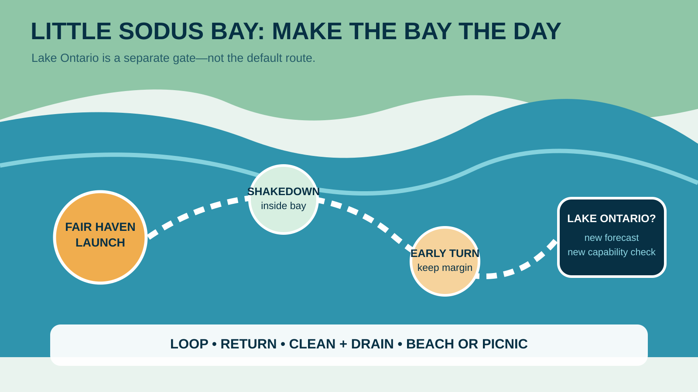

Fair Haven works because the boating day does not have to depend on Lake Ontario behaving. Little Sodus Bay offers a hard-surface state-park launch, enough protected water for a useful shakedown and a park with beach, picnic and rental options. The disciplined plan makes the bay the trip. An outside run happens only if the boat, operator, forecast and live inlet conditions all justify a separate decision.
Use the correct launch and the correct bay
This guide covers Little Sodus Bay at Fair Haven in Cayuga County—not Sodus Bay farther west. NYSDEC describes Little Sodus as a 750-acre bay, 2.3 miles long with a maximum depth of 35 feet. DEC lists the Fair Haven Beach State Park hard-surface ramp with parking for 150 cars and trailers, plus village ramps on King and Cottage streets.
The state park is the useful family base because launch, beach and land activities share one destination. Save the official Fair Haven page and call 315-947-5205 when a facility is essential.
DEC says the launch is open year-round. That does not promise ice-free water, staffed services, a swimmable beach, rentals or safe conditions. Treat each as a separate check.
The 2026 family logistics
The park lists guarded swimming daily from 11 a.m. to 7 p.m. from August 3 through September 7, 2026. Water quality, weather and staffing can still change access. Boat rentals are listed from May 15 through October 12, 9 a.m. to 5 p.m., by reservation through the park. Confirm before towing or promising either activity.
The park permits up to two supervised pets in day-use areas unless posted otherwise. Pets must be crated or leashed at no more than six feet and are excluded from guarded beaches, playgrounds and buildings. Bring proof of rabies vaccination.
Pack food and drinking water independent of concessions. Confirm restrooms on arrival, identify the family meeting point, and photograph the ramp-side rules before launch.
Accessibility has to be checked by task, not by a single park label. A family may be able to reach a picnic area but not transfer safely between dock and boat, manage a steep trailer ramp or cross sand to the guarded water. Ask the park about the exact route, surface, grade, restroom and beach access needed by your crew. Bring the boarding aid already proven on the boat; do not improvise a lift at a crowded dock.
Build the first hour entirely inside the bay
Launch and settle: move away from the ramp only after passengers are seated, children are in properly fitted life jackets and the operator has a clear channel. Complete the engine, steering, cooling, voltage and bilge checks near enough for an easy return.
Make one modest inside-bay loop: use current navigation information and posted markers, keeping clear of weeds, fishing activity, paddlers, docks and shallow margins. DEC notes very abundant rooted aquatic vegetation around the perimeter. A charted depth does not remove the risk of weeds, changing water level or local obstruction.
Set the turn before departure: return based on time, wind, passenger condition and launch margin—not when fuel or patience forces it. The family weather plan turns those limits into a decision.

Lake Ontario is a new trip decision
The opening to Lake Ontario changes exposure, waves, traffic and recovery options. Do not let a calm-looking horizon convert an inside-bay plan automatically. Review the current nearshore forecast, observations, radar, small-craft information and the actual inlet. Compare wind direction with the return route.
Outside travel requires suitable boat capability, operator experience, current charts, communications and a written return trigger. Children comfortable on the bay may not be comfortable in short lake chop. If any part is uncertain, turn inside and keep the original day intact.
Weather and water-quality gates
Check the National Weather Service forecast before leaving home and again at the ramp. Write down the wind, gust, thunder and visibility limits appropriate to the boat and operator. If thunder is heard or lightning is seen, the family belongs off exposed water and in a substantial shelter—not under a bimini or beside a tree.
NYSDEC's harmful-algal-bloom guidance says to avoid swimming, boating or otherwise recreating in a suspected bloom because visual identification is unreliable. Keep children and pets away from discolored water, surface streaks, mats or scum, and report suspicious conditions through DEC.
Cold water changes the consequence of a fall even on a warm day. Check water temperature, dress for immersion risk and keep the cold-water plan available outside midsummer.
Ramp discipline matters more than the parking count
A large listed parking capacity does not guarantee a space, an open lane or an easy turnaround. Stage straps, plug, lines, fenders, life jackets and electronics away from the ramp. Load food and children before joining the active lane only when the launch layout allows it safely.
After launch, move promptly to the courtesy area. On retrieval, send the driver only when the boat is ready, respect the queue and finish drain-down in the designated area. Use the launch checklist and busy-ramp etiquette guide.
New York requires boaters to drain and clean boats, trailers and equipment to prevent aquatic-invasive-species transport. Follow Clean.Drain.Dry and any steward directions before leaving.
Keep the launch team simple. One adult controls the boat, one controls children and loose gear, and nobody stands between a moving trailer and the water. If the driver cannot see the hand signal, stop. If wind pins the boat against the dock, reset with lines and fenders instead of using hands or feet as bumpers. The objective is not a fast launch; it is a predictable one that does not spend the family's attention before the trip begins.
Give the family a reliable second act
Choose one land option before launch: guarded swimming if confirmed, a picnic, playground time where permitted, or a short park walk. Keep dry clothes, shoes, towels and food in the vehicle so the second act does not depend on unpacking the boat.
The best timing is often an early on-water loop followed by lunch and land time. That avoids forcing tired children through a late retrieval while giving the operator daylight and margin to inspect weeds, propeller, trailer and tie-downs.
If swimming is closed, do not improvise at an unguarded shoreline because the family expected a beach. Use the declared backup and preserve the day.
Refuel before arrival when practical. Do not make the family plan depend on an unverified waterfront fuel stop, restaurant dock or same-day rental opening.
Who should skip this plan
- Crews expecting a guaranteed guarded beach, rental or staffed concession without same-day confirmation.
- Operators who need Lake Ontario mileage for the day to feel worthwhile.
- Boats with unresolved cooling, steering, fuel, battery or bilge concerns.
- Families unable to manage weeds, ramp queues or an early weather turn.
- Anyone treating the diagram as navigation information.
A paddling rental or land-only park day may fit better when the tow vehicle, boat or forecast adds too many moving parts. The park is valuable without launching.
The Fair Haven dashboard plan
Frequently asked questions
Is the Fair Haven Beach State Park boat launch open in 2026?
The official park page lists the boat launch as open year-round. Verify current alerts, weather and conditions because that listing does not guarantee ice-free water or staffed services.
When is swimming available at Fair Haven Beach in 2026?
The park lists daily guarded swimming from 11 a.m. to 7 p.m. through September 7 for the late-summer period. Staffing, weather and water quality can change access.
Can a family stay inside Little Sodus Bay?
Yes. A conservative first visit can make the 750-acre bay the entire boating plan and keep Lake Ontario optional.
Are pets allowed at Fair Haven Beach State Park?
Generally up to two supervised pets are allowed in day-use areas under the park's leash or crate rules, but not on guarded beaches, playgrounds or in buildings. Verify posted restrictions.
Does Little Sodus Bay have aquatic vegetation?
Yes. NYSDEC describes very abundant rooted aquatic vegetation around the perimeter. Watch cooling-water flow and keep clear of shallow weed beds.